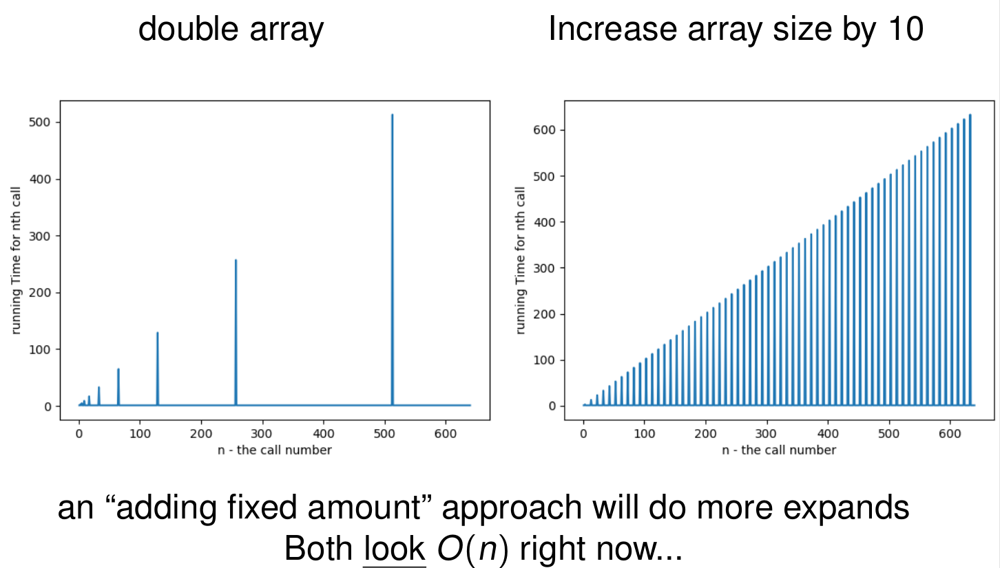

List + Array-based List
List
Before writing any code:
- Plan out, in the abstract, the “object nature” and what behaviors you need to support
- Write some example/test code
Discuss:
- What is a list?
- How do we use lists?
- What methods do we need?
List
- An ordered, finite, mutable data structure
- We manipulate it: create a list, append, prepend, insert, remove, get the length, get/set an individual value, search
What about sort?
List interface
Let’s implement a list interface.
- Remember that an interface only contains method signatures.
Let’s start with the basic methods:
append(T value)– adds an item to the end of the listlength()– returns how many items are in the listget(int index)– returns the item at indexset(int index, T value)– changes the value of the item at index
List interface
Here’s our initial generic interface:
public interface List<T> {
void append(T value);
int length();
T get(int index);
void set(int index, T value);
}List Implementation (Array)
- Data structures, or abstract data types (ADTs) can be implemented using different approaches
- We have our
Listinterface, we will start by implementing ourListwith an array - We will call our class
ArrayListand we will use theimplementskeyword:
public class ArrayList<T> implements List<T> {}Note: Java already has java.util.List and java.util.ArrayList – don’t import them, or they will clash with ours!
ArrayList
We need to keep track of three things:
data– the array that stores the itemscapacity– how many items the array can holdlength– how many items the list actually holds
private T[] data;
private int capacity = 10; // arbitrary starting capacity
private int length = 0;
@SuppressWarnings("unchecked")
public ArrayList() {
data = (T[]) new Object[capacity];
}ArrayList
We will create a generic ArrayList that implements List
public class ArrayList<T> implements List<T> {
private T[] data;
private int capacity = 10;
private int length = 0;
@SuppressWarnings("unchecked")
public ArrayList() {
data = (T[]) new Object[capacity];
}
@Override
public int length() {
return length;
}
@Override
public void append(T value) {
// TODO: implement
}
@Override
public T get(int index) {
// TODO: implement
return null;
}
@Override
public void set(int index, T value) {
// TODO: implement
}
@Override
public String toString() {
// TODO: implement
return "";
}
}Finish implementation
Submit your List.java and ArrayList.java files to gradescope.
public class UseList {
public static void main(String[] args) {
List<String> fruitList = new ArrayList<>();
System.out.println(fruitList.length()); // 0
System.out.println(fruitList);
fruitList.append("apple");
fruitList.append("pear");
fruitList.append("banana");
}
}toString()
What happens if we run System.out.println(fruitList); without a toString() method?
ArrayList@1b6d3586Write a toString() that returns the items separated by spaces – only the first length items!
@Override
public String toString() {
String out = "";
for (int i = 0; i < length; i++) out += data[i] + " ";
return out.trim();
}ArrayList append
@Override
public void append(T value) {
data[length] = value;
length++;
}What happens when length is the same as capacity?
Expand the size of our array
@SuppressWarnings("unchecked")
private void expandArray() {
capacity *= 2;
T[] newData = (T[]) new Object[capacity];
for (int i = 0; i < length; i++) newData[i] = data[i];
data = newData;
}append implementation
@Override
public void append(T value) {
if (length == capacity) expandArray();
data[length] = value;
length++;
}Submit to gradescope with array expansion
Submit your List.java and ArrayList.java files to gradescope making sure your array implementation can do multiple append calls (your implementation deals with array expansion) (don’t forget the toString() implementation as well)
Runtime of array expansion
The expandArray process is \(O(n)\) (gotta copy the array!) BUT it doesn’t run every time, so how do we handle the effect on append?
- Best case: \(O(1)\)
- Worst case: \(O(n)\)
Runtime of array expansion
What we often care about is not the runtime of myList.append(4); but instead:
for (int i = 0; i < N; i++) {
myList.append(i);
}Runtime of array expansion

Why does it work this way
One way to think about it:
- After an expand that costs N operations:
- We get N “free” appends
- Then we do 2N operations for next expand. (and so forth)
Amortized runtime
- It is not technically true that a single append is \(O(1)\) – sometimes it is \(O(n)\)
- It IS true that \(n\) appends cost \(O(n)\) time in total
- Spread that total over all \(n\) appends: \(O(n) / n = O(1)\) per append, on average
- We say append has amortized runtime \(O(1)\)
What if we grew the array by 10 each time instead of doubling? (see the plot!)
Updated List interface
Let’s add prepend, insert, append to our interface.
void insert(int index, T value);
void prepend(T value);When implementing ArrayList insert and prepend, we need to shift values in our array to the right
Shifting right
insert(1, X) on a list with 4 items:
index: 0 1 2 3 4
before: [ A | B | C | D | ]
after shiftRight(1): [ A | B | B | C | D ] copy backwards
data[1] = X: [ A | X | B | C | D ]Why do we have to copy starting from the end? What happens if we start from index 1?
shiftRight
private void shiftRight(int startIndex) {
if (length == capacity) expandArray(); // make room BEFORE growing
length++;
for (int i = length-1; i > startIndex; i--) data[i] = data[i-1];
}insert
public void insert(int index, T value) {
if (index < 0 || index > length) throw new IndexOutOfBoundsException("index out of range");
shiftRight(index);
data[index] = value;
}Note: index == length is allowed – that is the same as append
prepend
public void prepend(T value) {
shiftRight(0); // need to shift all values
data[0] = value;
}Submit to gradescope
Submit your List.java and ArrayList.java files to gradescope making sure your array implementation contains methods prepend and insert.
Changing size of the list – removing from list
Add T pop(int index) to our List interface – removes the item at index and returns it
We need to implement shiftLeft in ArrayList
index: 0 1 2 3 4
before (pop(1)): [ A | X | B | C | D ] save X to return
after shiftLeft(1): [ A | B | C | D | D ] copy forwards
clear last slot: [ A | B | C | D | ] length--Test your ArrayList implementation
public class UseList {
public static void main(String[] args) {
List<String> fruitList = new ArrayList<>();
System.out.println(fruitList.length()); // 0
System.out.println(fruitList);
fruitList.append("apple");
fruitList.append("pear");
fruitList.append("banana");
fruitList.prepend("kiwi");
fruitList.prepend("tomato");
fruitList.insert(2, "pineapple");
System.out.println(fruitList); // tomato kiwi pineapple apple pear banana
System.out.println(fruitList.pop(1)); // kiwi
System.out.println(fruitList); // tomato pineapple apple pear banana
}
}Also test the edge cases: an empty list, a full array (append 10+ items, then insert), the first index, and the last index.
Submit to gradescope
Submit your List.java and ArrayList.java files to gradescope making sure your array implementation contains the pop method.
ArrayList implementation
public class ArrayList<T> implements List<T> {
private T[] data;
private int capacity = 10;
private int length = 0;
@SuppressWarnings("unchecked")
public ArrayList() {
data = (T[]) new Object[capacity];
}
@Override
public int length() {
return length;
}
@Override
public void append(T value) {
if (length == capacity) {
expandArray();
}
data[length] = value;
length++;
}
@Override
public void insert(int index, T value) {
if (index < 0 || index > length) throw new IndexOutOfBoundsException("index out of range");
shiftRight(index);
data[index] = value;
}
@Override
public void prepend(T value) {
shiftRight(0); // need to shift all the other values
data[0] = value;
}
@Override
public T pop(int index) {
if (index < 0 || index >= length) throw new IndexOutOfBoundsException("index out of range");
T out = data[index];
shiftLeft(index);
return out;
}
private void shiftRight(int startIndex) {
if (length == capacity) expandArray(); // make room BEFORE growing
length++;
for (int i = length-1; i > startIndex; i--) data[i] = data[i-1];
}
private void shiftLeft(int startIndex) {
for (int i = startIndex; i < length-1; i++) data[i] = data[i+1];
data[length-1] = null; // clear the old last slot
length--;
}
@SuppressWarnings("unchecked")
private void expandArray() {
capacity *= 2;
T[] newData = (T[]) new Object[capacity];
for (int i = 0; i < length; i++) newData[i] = data[i];
data = newData;
}
@Override
public T get(int index) {
if (index < 0 || index >= length) throw new IndexOutOfBoundsException("index out of range");
return data[index];
}
@Override
public void set(int index, T value) {
if (index < 0 || index >= length) throw new IndexOutOfBoundsException("index out of range");
data[index] = value;
}
@Override
public String toString() {
String out = "";
for (int i = 0; i < length; i++) out += data[i] + " ";
return out.trim();
}
}Array-based List Runtime Summary
| Front of List | Middle of List | End of List | |
|---|---|---|---|
| get | O(1) | O(1) | O(1) |
| set | O(1) | O(1) | O(1) |
| insert | O(n) | O(n) | O(1)* |
| pop | O(n) | O(n) | O(1) |
* amortized – an occasional insert triggers an \(O(n)\) expansion
append= insert at the end → amortized \(O(1)\)prepend= insert at the front → \(O(n)\) (every item shifts)